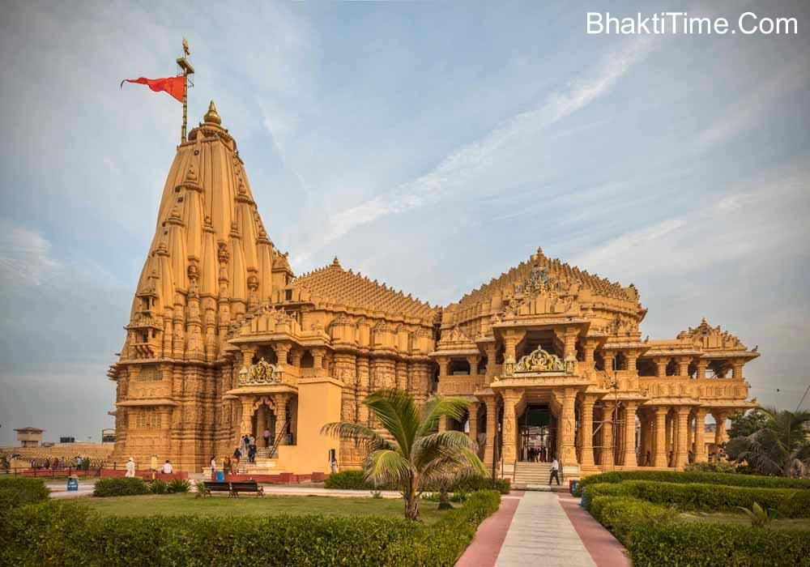

Samnath Jyotirlinga Temple

Samnath Jyotirlinga Temple
Somnath Temple is a Hindu temple, located in Prabhas Patan, Veraval in Gujarat, India. It is one of the most sacred pilgrimage sites the Tirtha Kshetra for Hindus and is the first among the twelve jyotirlinga shrines of Shiva.[1] It is unclear when the first version of the Somnath temple was built, with estimates varying between the early centuries of the 1st millennium and about the 9th century CE.
Various texts, including the Mahabharata and Bhagavata Purana, mention a tirtha (pilgrimage site) at Prabhas Patan on the coastline of Saurashtra, where the later temple was, but archaeology has not found traces of an early temple, though there was a settlement there.
The temple was reconstructed several times in the past after repeated destruction by multiple Muslim invaders and rulers, notably starting with an attack by Mahmud Ghazni in January 1026.
In the late 19th and early 20th centuries, historians and archaeologists of the colonial era actively studied the Somnath temple because its ruins showed a historic Hindu temple that was turning into an Islamic mosque.[11][12][13] After India's independence, those ruins were demolished, and the present Somnath temple was reconstructed in the Māru-Gurjara style of Hindu temple architecture.
The contemporary Somnath temple's reconstruction was started under the orders of the first Deputy Prime Minister of India, Vallabhbhai Patel. The reconstruction was completed in May 1951.
Location
The Somnath temple is located along the coastline in Prabhas Patan, Veraval, Saurashtra region of Gujarat. It is about 400 kilometres (249 mi) southwest of Ahmedabad, 82 kilometres (51 mi) south of Junagadh – another major archaeological and pilgrimage site in Gujarat. It is about 7 kilometres (4 mi) southeast of the Veraval railway junction, about 130 kilometres (81 mi) southeast of the Porbandar airport and about 85 kilometres (53 mi) west of the Diu airport.
The Somnath temple is located close to the ancient trading port of Veraval, one of three in Gujarat from where Indian merchants departed to trade goods. The 11th-century Persian historian Al-Biruni states that Somnath has become so famous because "it was the harbor for seafaring people and a station for those who went to and fro between Sufala in the country of Zanj (east Africa) and China".
Combined with its repute as an eminent pilgrimage site, its location was well known to the kingdoms within the Indian subcontinent.[17][18] Literature and epigraphical evidence suggest that the medieval-era Veraval port was also actively trading with the Middle East and Southeast Asia. This brought wealth and fame to the Veraval area, as well as the temple.
The site of Prabhas Patan was occupied during the Indus Valley Civilisation, 2000–1200 BCE. It was one of very few sites in the Junagadh district to be so occupied. After abandonment in 1200 BCE, it was reoccupied in 400 BCE and continued into the historical period. Prabhas is also close to the other sites similarly occupied: Junagadh, Dwarka, Padri and Bharuch.
Nomenclature and significance
Many Hindu texts provide a list of the most sacred Shiva pilgrimage sites, along with a guide for visiting the site. The best known were the Mahatmya genre of texts. Of these, Somnatha temple tops the list of jyotirlingas in the Jnanasamhita – chapter 13 of the Shiva Purana, and the oldest known text with a list of jyotirlingas. Other texts include the Varanasi Mahatmya (found in Skanda Purana), the Shatarudra Samhita and the Kothirudra Samhita.
All either directly mention the Somnath temple as the number one of twelve sites, or call the top temple as "Somesvara" in Saurashtra – a synonymous term for this site in these texts.[26][27][28][note 3] The exact date of these texts is unknown, but based on references they make to other texts and ancient poets or scholars, these have been generally dated between the 10th and 12th century, with some dating it much earlier and others a bit later.
The Somnath temple is not mentioned in ancient Sanskrit texts of Hinduism, but the "Prabhasa-Pattana" is mentioned as a tirtha (pilgrimage site).[4] For example, the Mahabharata (c. 400 CE in its mature form)[citation needed][31] in Chapters 109, 118 and 119 of the Book Three (Vana Parva), and Sections 10.45 and 10.78 of the Bhagavata Purana state Prabhasa to be a tirtha on the coastline of Saurashtra.
Alf Hiltebeitel – a Sanskrit scholar known for his translations and studies on Indic texts including the Mahabharata, states that the appropriate context for the legends and mythologies in the Mahabharata are the Vedic mythologies which it borrowed, integrated and re-adapted for its times and its audience.[33] The Brahmana layer of the Vedic literature already mention tirtha related to the Saraswati river. However, given the river was nowhere to be seen when the Mahabharata was compiled and finalized, the Saraswati legend was modified.
It vanishes into an underground river, then emerges as an underground river at holy sites for sangam (confluence) already popular with the Hindus. The Mahabharata then integrates the Saraswati legend of the Vedic lore with the Prabhasa tirtha, states Hiltebeitel.[33] The critical editions of the Mahabharata, in several chapters and books mentions that this "Prabhasa" is at a coastline near Dvaraka. It is described as a sacred site where Arjuna and Balarama go on tirtha, a site where Lord Krishna chooses to go and spends his final days, then dies.
Catherine Ludvik – a Religious Studies and Sanskrit scholar, concurs with Hiltebeitel. She states that the Mahabharata mythologies borrow from the Vedic texts but modify them from Brahmin-centered "sacrificial rituals" to tirtha rituals that are available to everyone – the intended audience of the great epic.[34] More specifically, she states that the sacrificial sessions along the Saraswati river found in sections such as of Pancavimsa Brahmana were modified to tirtha sites in the context of the Saraswati river in sections of Vana Parva and Shalya Parva.
Thus the mythology of Prabhasa in the Mahabharata, which it states to be "by the sea, near Dwaraka". This signifies an expanded context of pilgrimage as a "Vedic ritual equivalent", integrating Prabhasa that must have been already important as a tirtha site when the Vana Parva and Shalya Parva compilation was complete
The 5th century poem Raghuvamsa of Kalidasa mentions Somanatha-Prabhasa as a tirtha along with Prayaga, Pushkara, Gokarna. Bathing in one of these tirthas is meant to release one from the cycle of births and deaths.
Archaeologically, there is no evidence that a temple existed at the site in ancient times.